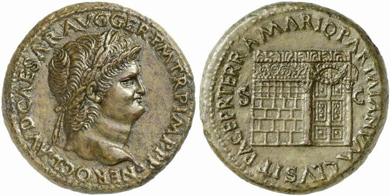

Unit 4 · Boudicca · Lesson 5
Why did the Iceni revolt? Prasutagus, Decianus Catus and the outrages
A king left his kingdom jointly to the emperor and his daughters, hoping to protect his family. Soon after he died, his people were at war with Rome. What do our two Roman writers blame, and how far does each reason explain the revolt?
Year 11 Ancient History · Present with → or space · Read on a phone with R

Review · books closed · 6 minutes · press K for the timer
Five questions from Lessons 1–4
- What happened in the revolt of about 47 CE, and what does it show about the Iceni? When the governor Ostorius “prepared to disarm all whom he suspected”, the Iceni, who had “voluntarily joined our alliance”, were “the first to resist” (Tacitus, Annals 12.31), and they were defeated. So the Iceni had resisted Rome once already, about 13 years before Boudicca’s revolt.
- Governor or procurator: which was Decianus Catus, and what did he control? The procurator: the official who ran the province’s finances and taxes. The governor, Suetonius Paulinus, commanded the army and was the chief judge.
- What was the colonia at Camulodunum, and whose land was it built on? A town of Roman citizens, mostly retired soldiers (veterans), founded in about 49 CE “on the conquered lands” (Annals 12.32): usually read as land taken from the Trinovantes.
- Give one difference between Tacitus and Dio as sources for the revolt. Any one, with its detail: Tacitus published the Annals about 55 years after the revolt, Dio wrote about 150 years after it · Dio’s Book 62 survives mainly in a later summary · Tacitus stresses the outrages against Prasutagus’s family, Dio stresses money and Boudicca’s leadership.
- Writing: join these two sentences with because, but or so: “The veterans took land. The Trinovantes resented them.” “The veterans took land, so the Trinovantes resented them.” (so = the consequence) or “The Trinovantes resented the veterans because the veterans had taken their land.” (because = the reason). But does not fit: it sets a limit, and there is none here.
Mark your own answers in a different colour. Which question did you find hardest?
Learning intentions and success criteria · 2 minutes
Today’s goals
- analyse the reasons for the Iceni’s revolt
- deconstruct a ‘to what extent’ question and write a thesis on a parallel question
- explain three grievances of Boudicca and the Iceni, with evidence
- explain the role of Decianus Catus in two sources
- write a thesis that concedes, then makes a judgement of degree
Syllabus outcomes: AH-11-02 proposes ideas about the varying causes and effects of events and developments · AH-11-03 explains the role and significance of forces, features, events, individuals and groups in shaping the past · AH-11-05 analyses different types of sources for evidence to support a historical account or argument · AH-11-07 communicates historical understanding, applying historical knowledge, terms and concepts. Life Skills: AH-LS-04 recognises causes and effects of events or developments · AH-LS-11 communicates information about the past using historical terms and concepts.
Note-making · the routine for the whole course
How to structure your notes
questions and key terms, written after
short phrases, arrows (→ leads to), abbreviations (T = Tacitus; D = Dio; P = Prasutagus)
- 1A new lesson, a new pageA cue column about a quarter of the page wide; title and date at the top; room for a summary at the bottom.
- 2Listen and look, then writeDon’t copy while a slide is being explained. Phrases, not sentences; a source for every claim.
- 3Write your own notes at the ✎ checkpointThen compare with the model notes, one row at a time. Add what you missed in a second colour.
- 4Two other places for notes todayThe grievance sort goes on your notes page, in four columns; your thesis goes in your booklet and on a sticky note.
- 5Finish with a three-sentence summaryOne checkpoint today: the grievances and the procurator. Write the cue questions afterwards, with exam verbs: explain, analyse, assess.
Key vocabulary · add to the unit word wall
Words for weighing reasons
| Question term | Meaning, then what the answer must do |
|---|---|
| To what extent | Not a glossary word: NESA calls it a self-explanatory term. It asks for a judgement of degree (largely, partly, only in part), argued with evidence. |
| Writing terms | Meaning |
| Thesis | The overall judgement that answers the question, argued in every paragraph. |
| Connective | A word that links ideas: time (by 47 CE), cause (as a result), concession (although). |
| Concession | Admitting the strongest point against your judgement (although, even if), then making the judgement anyway. |
| Content terms | Meaning |
|---|---|
| Client king | A local ruler allowed to keep his kingdom as Rome’s ally, in return for loyalty. |
| Governor / procurator | The emperor’s army commander and chief judge in a province (Suetonius Paulinus) / the official who ran its finances and taxes (Decianus Catus). |
| Added for this lesson | Meaning |
| Grievance | A complaint about treatment people feel is unfair. |
| Heir | The person who inherits property when its owner dies. |
| Sestertius (plural sesterces) | A Roman brass coin, and the unit Romans counted large sums in. |
1 · The grievances · I do — read with care, then think aloud: personal, political or economic?
Tacitus: what happened after Prasutagus died
Prasutagus, king of the Iceni, famed for his long prosperity, had made the emperor his heir along with his two daughters, under the impression that this token of submission would put his kingdom and his house out of the reach of wrong. But the reverse was the result, so much so that his kingdom was plundered by centurions, his house by slaves, as if they were the spoils of war. First, his wife Boudicea was scourged, and his daughters outraged. All the chief men of the Iceni, as if Rome had received the whole country as a gift, were stript of their ancestral possessions, and the king’s relatives were made slaves. Roused by these insults and the dread of worse, reduced as they now were into the condition of a province, they flew to arms and stirred to revolt the Trinobantes and others …
Tacitus, a Roman senator, Annals, published after about 113 CE · trans. A. J. Church and W. J. Brodribb (1876)
Words: token of submission = a sign that he accepted Rome’s power · centurions = Roman army officers · scourged = flogged · outraged = raped (the translators’ 19th-century word) · stript = stripped · ancestral possessions = lands and goods handed down in their families · the condition of a province = ruled directly by Rome, no longer a kingdom
The kingdom and the house: what kind of grievance? Political and economic: Rome’s men treat the kingdom as a prize of war and loot the king’s house.
Boudicca and her daughters? Personal: violence against the king’s family. Tacitus names it in one sentence; so do we.
The chief men? Economic, and political: they lose their family lands, and with them their rank.
The relatives, and the province? Political (and personal): the king’s relatives enslaved, and the kingdom ruled directly by Rome.
Who does Tacitus say did these things? Only for the plunder: centurions (the kingdom) and slaves (the house). The rest is in the passive (‘was scourged’, ‘were stript’), so he names no one, and no official.
1 · The grievances · I do — think aloud: what part does each writer give the procurator?
Decianus Catus, the procurator: two writers, two charges
Alarmed by this disaster and by the fury of the province which he had goaded into war by his rapacity, the procurator Catus crossed over into Gaul.
Tacitus, Annals, published after about 113 CE · trans. Church and Brodribb (1876)
An excuse for the war was found in the confiscation of the sums of money that Claudius had given to the foremost Britons; for these sums, as Decianus Catus, the procurator of the island, maintained, were to be paid back. This was one reason for the uprising; another was found in the fact that Seneca, in the hope of receiving a good rate of interest, had lent to the islanders 40,000,000 sesterces that they did not want [Cary notes that the Greek here is doubtful: another scholar would read “at their request”], and had afterwards called in this loan all at once and had resorted to severe measures in exacting it.
Cassius Dio, a Greek-speaking Roman senator, Roman History, about 200–222 CE; Book 62 survives mainly in Xiphilinus’s summary · trans. E. Cary (1925)
Words: goaded = provoked, driven · rapacity = greed for money and goods · confiscation = taking property away · maintained = insisted · Seneca = Nero’s adviser · 40,000,000 sesterces = Cary’s conversion: Dio’s Greek says ten million, and names no coin
What does Tacitus blame Catus for? Greed that drove the whole province to war. He says it only as Catus flees to Gaul.
What does Dio say Catus did? He insisted that Claudius’s gifts to leading Britons were loans, and took the money back: for Dio, ‘an excuse for the war’.
And Dio’s second money grievance? Seneca’s loan, called in all at once and harshly. Catus has no part in it.
So what part does each writer give Catus? Both blame him for money: greed that provoked the war (Tacitus), a demand for repayment (Dio). Neither says he ordered the acts of 14.31.
Whose grievances are Dio’s? ‘The foremost Britons’ (Claudius’s gifts) and ‘the islanders’ (the loan): Britons more widely, not only the Iceni.
1 · The grievances · Support · a summary extract, for anyone who needs it
The sources in brief
- 1Tacitus, Annals 14.31Prasutagus, king of the Iceni, left his kingdom jointly to the emperor and his two daughters, hoping to protect his family. After he died, Roman centurions and slaves looted his kingdom and his house. Boudicca was flogged and her daughters were raped. The leading Iceni lost their family lands, and the king’s relatives were enslaved. The Iceni took up arms and drew the Trinovantes and others into the revolt.
- 2Tacitus, Annals 14.32Tacitus says the procurator, Decianus Catus, had driven the province to war by his greed. After the colony at Camulodunum fell, Catus fled to Gaul.
- 3Cassius Dio, Roman History 62.2Dio says Catus demanded back money that the emperor Claudius had given to leading Britons, and that Seneca, Nero’s adviser, called in a loan (40 million sesterces in Cary’s translation) all at once and harshly. Dio does not mention Prasutagus or the outrages.
A summary in plain words, written for this lesson: it is not a quotation, so quote the sources themselves in your writing.
Notes checkpoint 1 of 1
The grievances and the procurator
2 · The question · We do — deconstruct the class question together · verb · topic · limits · do
To what extent was the mistreatment of the Iceni the main reason for the revolt of 60 or 61 CE?
Deconstruct it: what does this question ask you to do?
- Verb
- to what extent: a judgement of degree (how far?), not yes or no. Not a NESA glossary word: a self-explanatory term. Department advice: the closest NESA verb is assess, ‘Make a judgement of value, quality, outcomes, results or size.’
- Topic
- the mistreatment of the Iceni: what Rome’s men did to the Iceni after Prasutagus died (Tacitus, Annals 14.31)
- Limits
- the revolt of 60 or 61 CE; the main reason: so weigh the mistreatment against the other reasons, don’t just list it; decide what counts as mistreatment of the Iceni, and say so
- Do
- a thesis first: concede the strongest point on the other side, then put your degree on ‘the main reason’ and give your reasons.
The same four steps for every question: verb · topic · limits · what the answer must do. Today the class models this question; you write your own thesis on a parallel one.
2 · The question · We do — rank three theses on the class question · fingers on “3, 2, 1, show”
Weak, sound or strong? Rank three theses
To what extent was the mistreatment of the Iceni the main reason for the revolt of 60 or 61 CE?
- AThe mistreatment of the Iceni was largely the main reason for the revolt, because Tacitus presents the plunder and the outrages as what roused the Iceni to arms.
- BYes, the mistreatment of the Iceni was the main reason for the revolt, because the Romans treated the Iceni very badly.
- CAlthough the revolt had other causes, such as Seneca’s loan and the veterans’ seizures at Camulodunum, the mistreatment of the Iceni was largely the main reason for it, because Tacitus presents the plunder and the outrages as what roused the Iceni to arms.
- C · strong
- concedes the strongest point against it (although), puts a degree on the question’s claim (largely the main reason) and gives a reason from the source
- A · sound
- a degree and a reason, but it ignores the strongest point against it
- B · weak
- yes or no, with no degree; and “treated the Iceni very badly” repeats the question instead of giving evidence
3 · You do · Writing focus · 8 minutes · I do → We do → apply
Writing focus: concede, then judge how far
To what extent: not a glossary word. NESA: HSC questions “will continue to incorporate self-explanatory terms like ‘how,’ ‘why,’ or ‘to what extent.’” NESA, Glossary of key words
Your Judge sentence becomes your thesis: concede the strongest point against you, put your degree on the question’s own claim, give your reason.
Not “Yes, the mistreatment was the main reason.” · Worked example on the class question: the other degree from thesis C
Although the outrages against Prasutagus’s family sparked the Iceni’s revolt, they were only partly its main reason, because the grievances of other Britons largely explain why it spread.
Concession: the strongest point against, with although
Degree on the question’s claim (the main reason)
Reason, with because
Rewrite this yes/no thesis as a thesis of degree, with although, whereas or however. To what extent do coins show where the Iceni lived?
“Yes, the ECEN coins prove where the Iceni lived.”
Lesson 1 · Talbot (2015)Coin finds show “a distribution incorporating Norfolk, northern Suffolk and parts of fenland Cambridgeshire”. ECEN is “often assumed to be an abbreviation of the tribal name”; others read it as a personal name.
Although the coins attributed to the Iceni, some inscribed ECEN, cluster in Norfolk, northern Suffolk and parts of fenland Cambridgeshire, they show only partly where the Iceni lived, because historians still debate whether ECEN is the people’s name or a person’s.
Your own thesis on a parallel question: To what extent was Decianus Catus responsible for the revolt of 60 or 61 CE? Frame: “Although …, Decianus Catus was largely / only partly responsible for the revolt, because …” Stage 6: add a sentence with whereas or however naming the other causes. Your Writing toolkit (booklet pages 3–4): connectives by function.
3 · You do · 6 minutes · on your notes page · press K for the timer
Sort the grievances: personal, political, economic or religious?
- Rule four columns: personal · political · economic · religious.
- Sort the ten cards. A card may fit two columns: choose one and write why.
- Star the grievance you think mattered most, and say why.
Use the summary extract and your Notes 1. Word bank:
Which columns does Tacitus fill, and which does Dio? What might that tell you about each writer?
The kingdom plundered by centurions, ‘as if they were the spoils of war’
Tacitus, Annals 14.31 · the IceniBoudicca flogged; her daughters raped
Tacitus, Annals 14.31 · the king’s familyThe chief men ‘stript of their ancestral possessions’
Tacitus, Annals 14.31 · the IceniThe king’s relatives made slaves; the kingdom ruled as a province
Tacitus, Annals 14.31 · the IceniThe procurator’s ‘rapacity’ goaded the province into war
Tacitus, Annals 14.32 · the provinceCatus said Claudius’s gifts to leading Britons ‘were to be paid back’
Dio, Roman History 62.2 · leading BritonsSeneca’s loan (40,000,000 sesterces in Cary’s translation) called in all at once
Dio, Roman History 62.2 · ‘the islanders’The veterans at Camulodunum ‘drove people out of their houses’
Tacitus, Annals 14.31 · near the colony (usually read as the Trinovantes)The temple of the Divine Claudius: ‘a citadel, as it seemed, of perpetual tyranny’
Tacitus, Annals 14.31 · near the colony (usually read as the Trinovantes)Men chosen as its priests had to ‘squander their whole fortunes’
Tacitus, Annals 14.31 · near the colony (usually read as the Trinovantes)3 · You do · check your sort · correct it in a second colour
Check your sort
| Column | Cards |
|---|---|
| Personal | 2 (Boudicca and her daughters) · 4 (the king’s relatives) |
| Political | 1 (the kingdom treated as a prize of war) · 3 (land was rank) · 4 (enslaved; ruled as a province) · 8 (people called ‘captives and slaves’) · 9 (the temple as ‘perpetual tyranny’) |
| Economic | 1 (the kingdom looted) · 3 (family lands) · 5 (greed) · 6 (gifts called back) · 7 (the loan) · 8 (houses and farms) · 10 (the priests’ fortunes) |
| Religious | 9 (the temple of the Divine Claudius) · 10 (its priests) |
| Fits two columns | 1 political and economic (looted) · 3 economic and political (land was rank) · 4 personal and political · 8 economic and political (people called ‘captives and slaves’) · 9 religious and political · 10 religious and economic: either column is right with a reason |
| Whose grievance? | the Iceni: 1–4 · Britons more widely: 5–7 · people near the colony, usually read as the Trinovantes and others: 8–10. Keep this in mind when you weigh any one cause. |
3 · You do · 11 minutes · deconstruct first · then write · press K for the timer
To what extent was Decianus Catus responsible for the revolt of 60 or 61 CE?
Deconstruct it: what does this question ask you to do?
- Verb
- to what extent: a judgement of degree (how far?), not yes or no
- Topic
- Decianus Catus, the procurator: how far his actions caused the revolt
- Limits
- the revolt of 60 or 61 CE; Catus as Tacitus and Dio present him; responsible: weigh his part against the other causes
- Do
- a thesis: concede the strongest point on the other side, put your degree on responsible for the revolt, give your reason
- Start with the frame: concede, then your degree on responsible for the revolt, then because.
- Add a sentence with whereas or however naming the other causes you will weigh.
- Use the evidence: your notes, your sort and the sources’ own words.
Weigh Dio’s financial explanation against Tacitus’s outrages: why might each writer stress what he does? Write a thesis on this question that uses both.
Check first: which words in the question does your degree word attach to?
Responsible for the revolt. Your thesis says how far Catus was responsible (largely, only partly …), not how greedy he was.
Frame: “Although …, Decianus Catus was largely / only partly responsible for the revolt, because …”
Check for understanding · hinge question · 4 minutes · hold up your A, B, C or D card on “3, 2, 1, show”
Which is the strongest thesis?
For the class question: To what extent was the mistreatment of the Iceni the main reason for the revolt of 60 or 61 CE?
- AThe Iceni’s mistreatment was only partly the main reason, since other Britons’ grievances spread the revolt.
- BThe revolt had many causes, and every one of them was equally important to the Britons.
- CBoudicca revolted mainly because she was flogged and her daughters were attacked by Romans.
- DTacitus and Dio both discuss the causes of the revolt, but the two writers disagree.
B makes every cause equal, so it never judges how far. C narrows the question to Boudicca and puts no degree on ‘the main reason’. D describes the sources instead of answering. Even A has no concession, so by today’s ranking it is sound, not strong: add Although … to make it strong. A thesis that says largely with its own reason would be just as good: the shape, not the side, makes A the best of the four.
Exit · 3 minutes · before you leave
Your thesis, on a sticky note
Copy the first sentence of your thesis on Decianus Catus onto a sticky note, then place it on the line on the board: from not at all responsible to entirely responsible.
A concession (although, even if) naming the strongest point against it · a degree word on responsible for the revolt (largely, partly, only to a limited extent) · a reason with because, from the sources · no “This essay will …” · formal words.
Then check yourself against today’s three “I can” statements. Next lesson: why did others join the Iceni? You will get your thesis back to sharpen it.
Finish your notes If time · or at home
Summary: three sentences
- What does Tacitus say happened after Prasutagus died?
- What does each writer say about Decianus Catus?
- What must a thesis for a ‘to what extent’ question do?
According to Tacitus, Prasutagus left his kingdom jointly to the emperor and his daughters to protect it, but after his death centurions and slaves plundered it, Boudicca was flogged and her daughters raped, the leading Iceni lost their family lands and the king’s relatives were enslaved. Both writers blame the procurator, Decianus Catus: Tacitus for the ‘rapacity’ that goaded the province into war, and Dio for demanding back Claudius’s gifts, which Dio sets beside Seneca’s loan. A thesis for a ‘to what extent’ question concedes the strongest point against it, then states how far the question’s claim holds, and why.
Practice and review · 1 of 4 · true, false, justify
True or false? Justify your answer
- 1Prasutagus left his whole kingdom to his two daughters. False — Tacitus says he made the emperor his heir along with his two daughters (Annals 14.31).
- 2Dio describes the flogging of Boudicca and the rape of her daughters. False — only Tacitus does (14.31); Dio does not mention Prasutagus or the outrages.
- 3Decianus Catus was the governor of Britain. False — he was the procurator, in charge of finances and taxes; the governor was Suetonius Paulinus.
- 4Tacitus blames the procurator’s greed for driving the province to war. True — the province “which he had goaded into war by his rapacity” (14.32).
- 5For Dio, Seneca’s loan was one of the reasons for the uprising. True — after Catus’s demand, “This was one reason for the uprising; another was found in the fact that Seneca …” (62.2).
- 6A thesis for a ‘to what extent’ question should answer yes or no. False — it states how far the question’s claim holds, with a reason; a strong thesis concedes the strongest point against it first.
Practice and review · 2 of 4 · writing · concede, then judge how far
Write it as a historian
- To what extent is Tacitus more reliable than Dio as a source for the revolt? “Yes, Tacitus is more reliable than Dio.”
- To what extent did the colony at Camulodunum do what Rome founded it to do? “No, the colony did not do what Rome wanted.”
1. Although Dio may preserve details that Tacitus leaves out, such as Seneca’s loan, Tacitus is largely more reliable than Dio for the events of the revolt, because he wrote about 100 years closer to it. 2. Although Rome founded the colony ‘as a defence against the rebels’ (Annals 12.32), it did what Rome intended only to a limited extent, because the veterans ‘drove people out of their houses’ (14.31), so the colony bred the resentment it was meant to prevent.
To what extent do coins show where the Iceni lived? “Although historians debate what ECEN means, the coins are largely found in Norfolk.”
The degree sits on where the coins are found, not on what the question asks.
Although historians still debate what ECEN means, the coins largely show where the Iceni lived, because finds of coins attributed to the Iceni cluster in Norfolk, northern Suffolk and parts of fenland Cambridgeshire.
Practice and review · 3 of 4 · extension · analyse
Money or outrage? Why each writer stresses what he does
Weigh Dio’s financial explanation against Tacitus’s outrages: why might each writer stress what he does?
Write a thesis on the Catus question (To what extent was Decianus Catus responsible for the revolt of 60 or 61 CE?) that uses both writers. It is your own: no model is given, because you will keep working on it.
Each writer may stress the causes that suit his purpose. Tacitus, writing a history that judges Rome’s rulers, presents the revolt as provoked by Roman wrongs: he puts the plunder of Prasutagus’s kingdom and the outrages against his family first, has the chief men stripped of their lands ‘as if Rome had received the whole country as a gift’ (Annals 14.31), and blames the procurator’s ‘rapacity’ (14.32). Dio, writing about 150 years later, sets the revolt beside Nero’s ‘child’s play’ in Rome; he gives two money grievances, including a loan from Seneca, Nero’s adviser, calls the procurator’s demand only ‘an excuse for the war’, and makes Buduica herself ‘chiefly instrumental in rousing the natives’ (62.1–2). Neither emphasis can show which grievance the Britons themselves felt most, because no British account survives; and since Dio’s Book 62 survives mainly as a later summary, some of his emphasis may be his summariser’s.
Practice and review · 4 of 4 · cover your notes and answer from memory
Quick checks
- What did Prasutagus’s will say, and why did he make it? He made the emperor his heir along with his two daughters, hoping to keep his kingdom and his house “out of the reach of wrong” (Annals 14.31).
- According to Tacitus, what happened to the Iceni after Prasutagus died? His kingdom was plundered by centurions and his house by slaves; Boudicca was flogged and her daughters raped; the chief men lost their family lands; the king’s relatives were enslaved (14.31).
- Explain the role of Decianus Catus in Tacitus’s account. As procurator, his greed (“rapacity”) goaded the province into war; after Camulodunum fell, he fled to Gaul (14.32).
- Explain the role of Decianus Catus in Dio’s account. He insisted that Claudius’s gifts to leading Britons were to be paid back: for Dio, “An excuse for the war” and one reason for the uprising (62.2).
- What does Dio add that Tacitus does not mention? Seneca’s loan, called in all at once (62.2): 40,000,000 sesterces in Cary’s translation (Dio’s Greek says ten million and names no coin). Cary notes that the Greek for “that they did not want” is doubtful.
- What does a thesis for a ‘to what extent’ question do? It states how far the question’s claim holds (a judgement of degree), with its reason; a strong thesis first concedes the strongest point against it.
Sources and credits
Where everything comes from
Tacitus, Annals 12.31, 12.32, 14.31 and 14.32: trans. A. J. Church and W. J. Brodribb (public domain), Perseus Digital Library (CC BY-SA 3.0 US). Cassius Dio, Roman History 62.1–2, with Cary’s note on 62.2: trans. E. Cary (Loeb, vol. VIII, 1925), LacusCurtius (public domain in the US; quoted briefly).
J. A. Talbot, What is Icenian coinage? (DPhil thesis, University of Oxford, 2015), quoted briefly. Facts: University of Warwick, Warwick Classics Network, “Boudica’s Revolt”; Classical Numismatic Group, Nomos 2, lot 174 (the coin). The NESA Glossary of key words (wording quoted exactly). Model sentences and the summary extract were written for this lesson.
Outcomes and content: NSW Education Standards Authority (NESA), Ancient History 11–12 Syllabus (2024). © NESA.
- A brass sestertius of the emperor Nero, struck at Lugdunum (Lyon) in about 65 CE (Classical Numismatic Group) · Photo: Classical Numismatic Group, Inc. (cngcoins.com) · CC BY-SA 2.5 · source

All images are public domain or openly licensed, and were resized for the web. Each is shared under the licence shown.